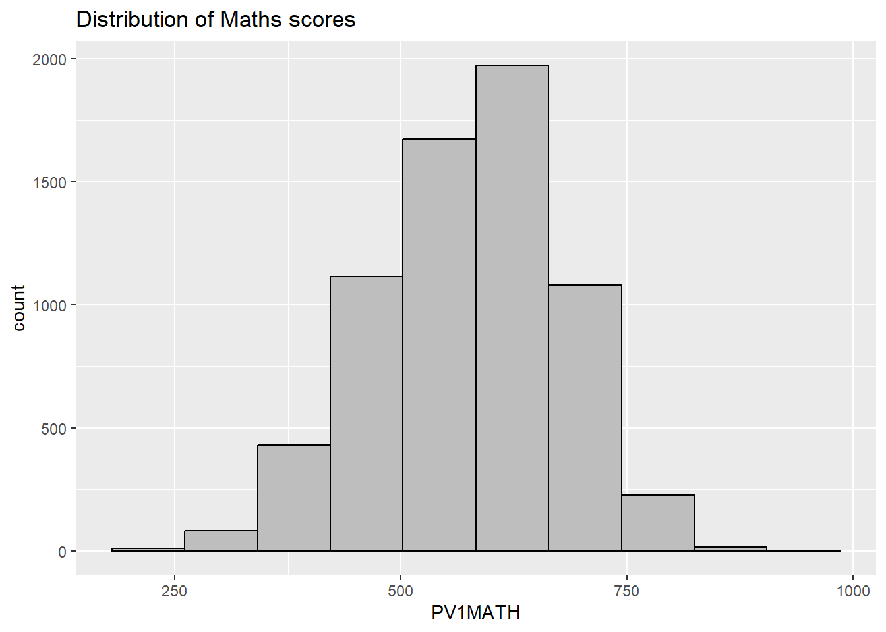
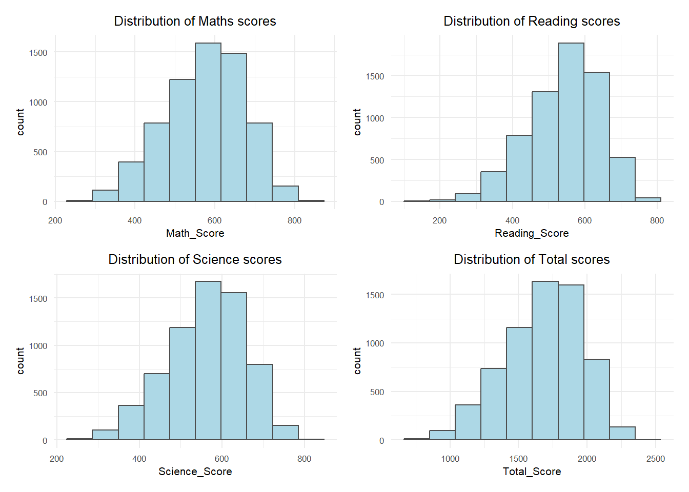
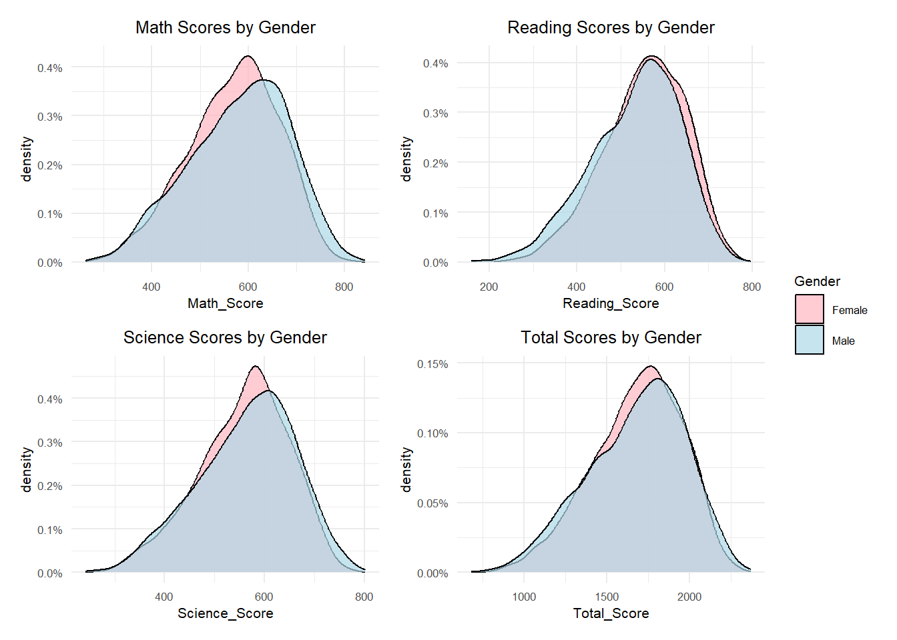
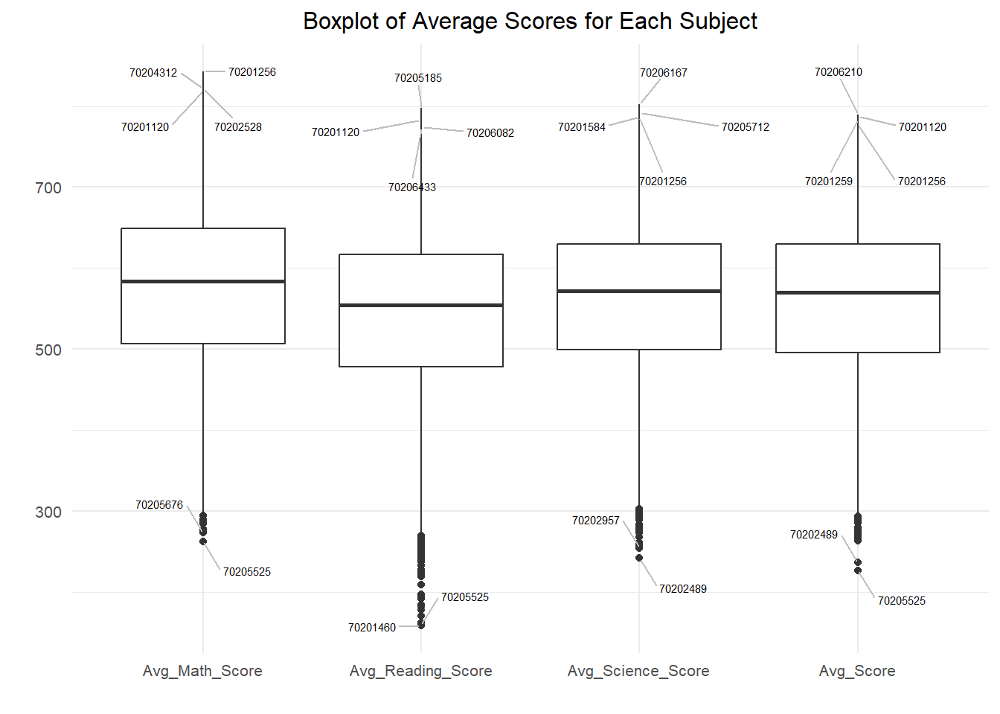
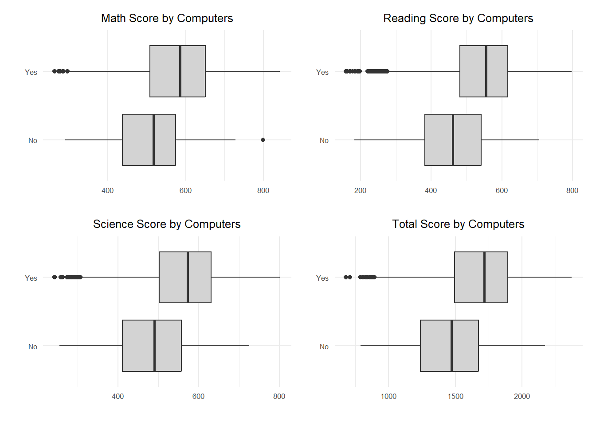
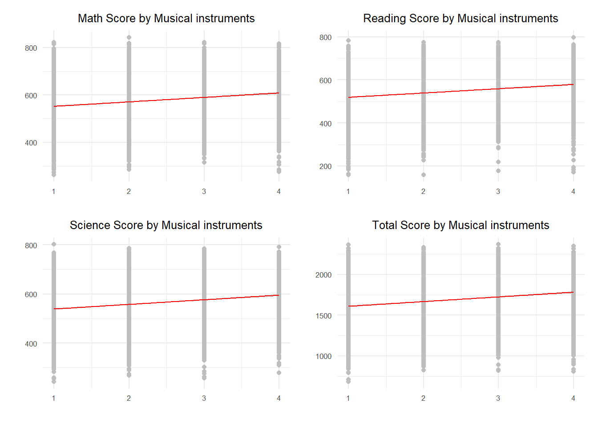

#Load packages
pacman::p_load(tidyverse,haven,dplyr,plotly,ggrepel, patchwork,
ggthemes, hrbrthemes, ggplot2, haven)Take home Exercise 1
Take-home Exercise 1
Creating data visualisation beyond default
Setting the Scene
OECD education director Andreas Schleicher shared in a BBC article that “Singapore managed to achieve excellence without wide differences between children from wealthy and disadvantaged families.” (2016) Furthermore, several Singapore’s Minister for Education also started an “every school a good school” slogan. The general public, however, strongly belief that there are still disparities that exist, especially between the elite schools and neighborhood school, between students from families with higher socioeconomic status and those with relatively lower socioeconomic status and immigration and non-immigration families.
The Data
The PISA 2022 database contains the full set of responses from individual students, school principals and parents. There are a total of five data files and their contents are as follows:
Student questionnaire data file
School questionnaire data file
Teacher questionnaire data file
Cognitive item data file
Questionnaire timing data file
These data files are in SAS and SPSS formats. For the purpose of this assignment, you are required to use the Student questionnaire data file only. However, you are encouraged to download the other files for future needs.
Project Objectives
The project will provide valuable insights into the educational achievements of Singapore students as measured by PISA 2022, contributing to the ongoing discourse on educational equity and quality in Singapore. This analysis will be of interest to educational policymakers, researchers, and the general public, offering a data-driven perspective on the effectiveness of current educational strategies and policies.
2.Set Up
2.1 Load the relevant packages into the R environment
We use the pacman::p_load() function to load the required R packages into our working environment. The loaded packages are:
plotly: For creating interactive web-based graphs.
ggthemes: Provides additional themes for ggplot2
tidyverse: A collection of core packages designed for data science, used extensively for data preparation and wrangling.
2.2 Import the data-sets
The database comprises five key data files, each serving a unique purpose:
Student Questionnaire Data File:
This file contains responses from students, providing insights into their backgrounds, attitudes, and experiences in education. Key areas include demographic information, learning habits, and perceptions of their educational environment.
Primary Source for Analysis: For the current project, this file will be the main focus, offering direct insights into student performance and personal backgrounds.
2.3 Summary Statistics of cy08msp_stu_qqq.sas7bdat
stuqqq <- read_sas("THE1/data/cy08msp_stu_qqq.sas7bdat")stuqqq_SG <- stuqqq %>%
filter(CNT == "SGP")write_rds(stuqqq_SG,
"THE1/data/stuqqq_SG.rds")stuqqq_SG <-
read_rds("THE1/data/stuqqq_SG.rds")Checking the structure of demo_data using str():
str(stuqqq_SG)tibble [6,606 × 1,279] (S3: tbl_df/tbl/data.frame)
$ CNT : chr [1:6606] "SGP" "SGP" "SGP" "SGP" ...
..- attr(*, "label")= chr "Country code 3-character"
$ CNTRYID : num [1:6606] 702 702 702 702 702 702 702 702 702 702 ...
..- attr(*, "label")= chr "Country Identifier"
$ CNTSCHID : num [1:6606] 70200052 70200134 70200112 70200004 70200152 ...
..- attr(*, "label")= chr "Intl. School ID"
$ CNTSTUID : num [1:6606] 70200001 70200002 70200003 70200004 70200005 ...
..- attr(*, "label")= chr "Intl. Student ID"
$ CYC : chr [1:6606] "08MS" "08MS" "08MS" "08MS" ...
..- attr(*, "label")= chr "PISA Assessment Cycle (2 digits + 2 character Assessment type - MS/FT)"
$ NatCen : chr [1:6606] "070200" "070200" "070200" "070200" ...
..- attr(*, "label")= chr "National Centre 6-digit Code"
$ STRATUM : chr [1:6606] "SGP01" "SGP01" "SGP01" "SGP01" ...
..- attr(*, "label")= chr "Stratum ID 5-character (cnt + original stratum ID)"
$ SUBNATIO : chr [1:6606] "7020000" "7020000" "7020000" "7020000" ...
..- attr(*, "label")= chr "Adjudicated sub-region code 7-digit code (3-digit country code + region ID + stratum ID)"
$ REGION : num [1:6606] 70200 70200 70200 70200 70200 70200 70200 70200 70200 70200 ...
..- attr(*, "label")= chr "REGION"
$ OECD : num [1:6606] 0 0 0 0 0 0 0 0 0 0 ...
..- attr(*, "label")= chr "OECD country"
$ ADMINMODE : num [1:6606] 2 2 2 2 2 2 2 2 2 2 ...
..- attr(*, "label")= chr "Mode of Respondent"
$ LANGTEST_QQQ: num [1:6606] 313 313 313 313 313 313 313 313 313 313 ...
..- attr(*, "label")= chr "Language of Questionnaire"
$ LANGTEST_COG: num [1:6606] 313 313 313 313 313 313 313 313 313 313 ...
..- attr(*, "label")= chr "Language of Assessment"
$ LANGTEST_PAQ: num [1:6606] NA NA NA NA NA NA NA NA NA NA ...
..- attr(*, "label")= chr "Language of Parent Questionnaire"
$ Option_CT : num [1:6606] NA NA NA NA NA NA NA NA NA NA ...
..- attr(*, "label")= chr "Creative Thinking Option"
$ Option_FL : num [1:6606] NA NA NA NA NA NA NA NA NA NA ...
..- attr(*, "label")= chr "Financial Literacy Option"
$ Option_ICTQ : num [1:6606] 1 1 1 1 1 1 1 1 1 1 ...
..- attr(*, "label")= chr "ICT Questionnaire Option"
$ Option_WBQ : num [1:6606] 0 0 0 0 0 0 0 0 0 0 ...
..- attr(*, "label")= chr "Well-Being Questionnaire Option"
$ Option_PQ : num [1:6606] 0 0 0 0 0 0 0 0 0 0 ...
..- attr(*, "label")= chr "Parent Questionnaire Option"
$ Option_TQ : num [1:6606] 0 0 0 0 0 0 0 0 0 0 ...
..- attr(*, "label")= chr "Teacher Questionnaire Option"
$ Option_UH : num [1:6606] 0 0 0 0 0 0 0 0 0 0 ...
..- attr(*, "label")= chr "Une Heure Option"
$ BOOKID : num [1:6606] 4 45 8 40 42 15 13 39 14 7 ...
..- attr(*, "label")= chr "Form Identifier"
$ ST001D01T : num [1:6606] 10 10 10 10 10 10 10 10 10 10 ...
..- attr(*, "label")= chr "Student International Grade (Derived)"
$ ST003D02T : num [1:6606] 10 6 7 2 9 9 3 4 8 6 ...
..- attr(*, "label")= chr "Student (Standardized) Birth - Month"
$ ST003D03T : num [1:6606] 2006 2006 2006 2006 2006 ...
..- attr(*, "label")= chr "Student (Standardized) Birth -Year"
$ ST004D01T : num [1:6606] 1 2 2 2 1 1 2 2 1 2 ...
..- attr(*, "label")= chr "Student (Standardized) Gender"
$ ST250Q01JA : num [1:6606] 2 1 1 2 2 2 1 1 2 2 ...
..- attr(*, "label")= chr "Which of the following are in your [home]: A room of your own"
$ ST250Q02JA : num [1:6606] 1 1 1 1 1 1 1 1 1 1 ...
..- attr(*, "label")= chr "Which of the following are in your [home]: A computer (laptop, desktop, or tablet) that you can use for school work"
$ ST250Q03JA : num [1:6606] 1 1 2 1 1 1 1 1 1 1 ...
..- attr(*, "label")= chr "Which of the following are in your [home]: Educational Software or Apps"
$ ST250Q04JA : num [1:6606] 1 1 1 1 1 1 1 1 1 1 ...
..- attr(*, "label")= chr "Which of the following are in your [home]: Your own [cell phone] with Internet access (e.g. smartphone)"
$ ST250Q05JA : num [1:6606] 1 1 1 1 1 1 1 1 1 1 ...
..- attr(*, "label")= chr "Which of the following are in your [home]: Internet access (e.g. Wi-fi) (excluding through smartphones)"
$ ST250D06JA : chr [1:6606] "7020002" "7020001" "7020001" "7020002" ...
..- attr(*, "label")= chr "Which of the following are in your home? <Country-specific item 1>"
$ ST250D07JA : chr [1:6606] "7020002" "7020001" "7020002" "7020002" ...
..- attr(*, "label")= chr "Which of the following are in your home? <Country-specific item 2>"
$ ST251Q01JA : num [1:6606] 2 1 2 1 2 2 2 1 3 3 ...
..- attr(*, "label")= chr "How many of these items are there at your [home]: Cars, vans, or trucks"
$ ST251Q02JA : num [1:6606] 1 4 1 2 2 1 1 1 1 1 ...
..- attr(*, "label")= chr "How many of these items are there at your [home]: Mopeds or motorcycles"
$ ST251Q03JA : num [1:6606] 3 3 3 3 2 2 3 3 4 3 ...
..- attr(*, "label")= chr "How many of these items are there at your [home]: Rooms with a bath or shower"
$ ST251Q04JA : num [1:6606] 3 3 3 3 2 3 3 3 4 3 ...
..- attr(*, "label")= chr "How many of these items are there at your [home]: Rooms with a [flush toilet]"
$ ST251Q06JA : num [1:6606] 3 4 2 2 1 2 2 3 4 1 ...
..- attr(*, "label")= chr "How many of these items are there at your [home]: Musical instruments (e.g. guitar, piano, [country-specific example])"
$ ST251Q07JA : num [1:6606] 3 2 1 1 4 1 4 1 4 3 ...
..- attr(*, "label")= chr "How many of these items are there at your [home]: Works of art (e.g. paintings, sculptures, [country-specific example])"
$ ST251D08JA : chr [1:6606] "9999997" "9999997" "9999997" "9999997" ...
..- attr(*, "label")= chr "How many of these items are there at your home? <Country-specific item 1>"
$ ST251D09JA : chr [1:6606] "9999997" "9999997" "9999997" "9999997" ...
..- attr(*, "label")= chr "How many of these items are there at your home? <Country-specific item 2>"
$ ST253Q01JA : num [1:6606] 7 8 7 6 7 7 8 8 8 7 ...
..- attr(*, "label")= chr "How many [digital devices] with screens are there in your [home]?"
$ ST254Q01JA : num [1:6606] 2 3 2 2 2 2 2 2 2 2 ...
..- attr(*, "label")= chr "How many of the following [digital devices] are in your [home]: Televisions"
$ ST254Q02JA : num [1:6606] 1 2 2 1 3 2 2 5 2 2 ...
..- attr(*, "label")= chr "How many of the following [digital devices] are in your [home]: Desktop computers"
$ ST254Q03JA : num [1:6606] 3 2 2 2 2 2 3 3 3 4 ...
..- attr(*, "label")= chr "How many of the following [digital devices] are in your [home]: Laptop computers or notebooks"
$ ST254Q04JA : num [1:6606] 2 3 2 1 1 2 2 3 3 2 ...
..- attr(*, "label")= chr "How many of the following [digital devices] are in your [home]: Tablets (e.g. [iPad®], [BlackBerry® Playbook™])"
$ ST254Q05JA : num [1:6606] 1 5 1 1 NA 1 1 5 2 2 ...
..- attr(*, "label")= chr "How many of the following [digital devices] are in your [home]: E-book readers (e.g. [Kindle™], [Kobo], [Bookeen])"
$ ST254Q06JA : num [1:6606] 3 2 3 3 4 2 4 3 4 4 ...
..- attr(*, "label")= chr "How many of the following [digital devices] are in your [home]: [Cell phones] with Internet access (i.e. smartphones)"
$ ST255Q01JA : num [1:6606] 7 4 4 3 2 2 4 5 7 4 ...
..- attr(*, "label")= chr "How many books are there in your [home]?"
$ ST256Q01JA : num [1:6606] 2 4 5 2 4 1 1 3 4 4 ...
..- attr(*, "label")= chr "How many of these books at [home]: Religious books (e.g. [Bible], [Example 2])"
$ ST256Q02JA : num [1:6606] 2 5 2 1 1 2 1 5 4 2 ...
..- attr(*, "label")= chr "How many of these books at [home]: Classical literature (e.g. [Shakespeare], [Example 2])"
$ ST256Q03JA : num [1:6606] 4 5 2 1 1 2 2 5 5 1 ...
..- attr(*, "label")= chr "How many of these books at [home]: Contemporary literature"
$ ST256Q06JA : num [1:6606] 4 3 3 2 2 5 2 4 4 1 ...
..- attr(*, "label")= chr "How many of these books at [home]: Books on science"
$ ST256Q07JA : num [1:6606] 3 5 5 2 2 5 1 4 3 1 ...
..- attr(*, "label")= chr "How many of these books at [home]: Books on art, music, or design"
$ ST256Q08JA : num [1:6606] 3 3 3 1 1 5 1 5 5 2 ...
..- attr(*, "label")= chr "How many of these books at [home]: [Technical reference books]"
$ ST256Q09JA : num [1:6606] 2 2 4 2 2 2 2 2 2 3 ...
..- attr(*, "label")= chr "How many of these books at [home]: Dictionaries"
$ ST256Q10JA : num [1:6606] 4 4 5 2 4 1 4 4 4 3 ...
..- attr(*, "label")= chr "How many of these books at [home]: Books to help with your school work"
$ ST230Q01JA : num [1:6606] 4 4 2 4 4 3 2 2 3 4 ...
..- attr(*, "label")= chr "How many siblings (including brothers, sisters, step-brothers, and step-sisters) do you have?"
$ ST005Q01JA : num [1:6606] 2 2 2 2 2 2 2 2 2 2 ...
..- attr(*, "label")= chr "What is the [highest level of schooling] completed by your mother?"
$ ST006Q01JA : num [1:6606] 2 2 2 2 2 2 2 NA 2 2 ...
..- attr(*, "label")= chr "Does your mother have any of the following qualifications: [ISCED level 8]"
$ ST006Q02JA : num [1:6606] 2 2 2 2 2 2 2 1 2 2 ...
..- attr(*, "label")= chr "Does your mother have any of the following qualifications: [ISCED level 7]"
$ ST006Q03JA : num [1:6606] 1 2 2 2 2 2 2 1 1 1 ...
..- attr(*, "label")= chr "Does your mother have any of the following qualifications: [ISCED level 6]"
$ ST006Q04JA : num [1:6606] 2 1 2 2 1 1 2 1 1 2 ...
..- attr(*, "label")= chr "Does your mother have any of the following qualifications: [ISCED level 5]"
$ ST006Q05JA : num [1:6606] 1 1 2 1 2 1 1 1 1 1 ...
..- attr(*, "label")= chr "Does your mother have any of the following qualifications: [ISCED level 4]"
$ ST007Q01JA : num [1:6606] 2 2 2 4 2 2 4 2 2 2 ...
..- attr(*, "label")= chr "What is the [highest level of schooling] completed by your father?"
$ ST008Q01JA : num [1:6606] 2 2 2 NA 2 2 2 NA 2 2 ...
..- attr(*, "label")= chr "Does your father have any of the following qualifications: [ISCED level 8]"
$ ST008Q02JA : num [1:6606] 2 2 2 NA 2 1 2 NA 2 2 ...
..- attr(*, "label")= chr "Does your father have any of the following qualifications: [ISCED level 7]"
$ ST008Q03JA : num [1:6606] 2 2 2 NA 2 1 2 1 1 2 ...
..- attr(*, "label")= chr "Does your father have any of the following qualifications: [ISCED level 6]"
$ ST008Q04JA : num [1:6606] 1 1 2 NA 1 1 2 1 1 1 ...
..- attr(*, "label")= chr "Does your father have any of the following qualifications: [ISCED level 5]"
$ ST008Q05JA : num [1:6606] 2 1 2 1 2 1 2 1 1 2 ...
..- attr(*, "label")= chr "Does your father have any of the following qualifications: [ISCED level 4]"
$ ST258Q01JA : num [1:6606] 1 1 1 5 1 1 1 1 1 1 ...
..- attr(*, "label")= chr "In the past 30 days, how often did you not eat because there was not enough money to buy food?"
$ ST259Q01JA : num [1:6606] NA NA NA NA NA NA NA NA NA NA ...
..- attr(*, "label")= chr "Now think about where you would place your family on this scale. Where would you say your family stands at this time?"
$ ST259Q02JA : num [1:6606] NA NA NA NA NA NA NA NA NA NA ...
..- attr(*, "label")= chr "Now think about where you would place your family on this scale. Where do you think you will stand when you are 30?"
$ ST019AQ01T : num [1:6606] 1 1 1 1 1 2 1 2 1 1 ...
..- attr(*, "label")= chr "In what country were you and your parents born? You"
$ ST019BQ01T : num [1:6606] 1 1 2 1 1 2 1 2 1 1 ...
..- attr(*, "label")= chr "In what country were you and your parents born? Mother"
$ ST019CQ01T : num [1:6606] 1 1 1 1 1 2 1 2 1 1 ...
..- attr(*, "label")= chr "In what country were you and your parents born? Father"
$ ST021Q01TA : num [1:6606] NA NA NA NA NA 1 NA 1 NA NA ...
..- attr(*, "label")= chr "How old were you when you arrived in [country of test]?"
$ ST022Q01TA : num [1:6606] 1 1 2 2 1 2 1 2 1 2 ...
..- attr(*, "label")= chr "What language do you speak at home most of the time?"
$ ST226Q01JA : num [1:6606] 1 1 1 1 1 1 1 4 1 1 ...
..- attr(*, "label")= chr "How long have you been enrolled at this school?"
$ ST125Q01NA : num [1:6606] 3 5 8 4 8 3 4 8 8 4 ...
..- attr(*, "label")= chr "How old were you when you started [ISCED 0]: Years"
$ ST126Q01TA : num [1:6606] 4 5 5 5 5 5 5 5 4 5 ...
..- attr(*, "label")= chr "How old were you when you started [ISCED 1]: Years"
$ ST127Q01TA : num [1:6606] 1 1 1 1 1 1 1 1 1 1 ...
..- attr(*, "label")= chr "Have you ever repeated a [grade]: At [ISCED 1]"
$ ST127Q02TA : num [1:6606] 1 1 1 1 1 1 1 1 1 1 ...
..- attr(*, "label")= chr "Have you ever repeated a [grade]: At [ISCED 2]"
$ ST127Q03TA : num [1:6606] 1 1 1 1 1 1 1 1 1 1 ...
..- attr(*, "label")= chr "Have you ever repeated a [grade]: At [ISCED 3]"
$ ST260Q01JA : num [1:6606] 1 1 1 1 1 1 1 1 1 1 ...
..- attr(*, "label")= chr "Have you ever missed school for more than three months in a row: At [ISCED 1]"
$ ST260Q02JA : num [1:6606] 1 1 1 1 1 1 1 1 1 1 ...
..- attr(*, "label")= chr "Have you ever missed school for more than three months in a row: At [ISCED 2]"
$ ST260Q03JA : num [1:6606] 1 1 1 1 1 1 1 1 1 1 ...
..- attr(*, "label")= chr "Have you ever missed school for more than three months in a row: At [ISCED 3]"
$ ST261Q01JA : num [1:6606] NA NA NA NA NA NA NA NA NA NA ...
..- attr(*, "label")= chr "Why miss school for 3+ months: I was bored."
$ ST261Q02JA : num [1:6606] NA NA NA NA NA NA NA NA NA NA ...
..- attr(*, "label")= chr "Why miss school for 3+ months: I was suspended for something (e.g. violence, aggression, use of drugs, drug dealing)."
$ ST261Q03JA : num [1:6606] NA NA NA NA NA NA NA NA NA NA ...
..- attr(*, "label")= chr "Why miss school for 3+ months: I was pregnant."
$ ST261Q04JA : num [1:6606] NA NA NA NA NA NA NA NA NA NA ...
..- attr(*, "label")= chr "Why miss school for 3+ months: I could not reach school because of transportation problems."
$ ST261Q05JA : num [1:6606] NA NA NA NA NA NA NA NA NA NA ...
..- attr(*, "label")= chr "Why miss school for 3+ months: I had to take care of a family member."
$ ST261Q06JA : num [1:6606] NA NA NA NA NA NA NA NA NA NA ...
..- attr(*, "label")= chr "Why miss school for 3+ months: I had to help with work at home, the family business, or on the family land."
$ ST261Q07JA : num [1:6606] NA NA NA NA NA NA NA NA NA NA ...
..- attr(*, "label")= chr "Why miss school for 3+ months: I had to get work to bring money home."
$ ST261Q08JA : num [1:6606] NA NA NA NA NA NA NA NA NA NA ...
..- attr(*, "label")= chr "Why miss school for 3+ months: I was sick."
$ ST261Q09JA : num [1:6606] NA NA NA NA NA NA NA NA NA NA ...
..- attr(*, "label")= chr "Why miss school for 3+ months: I did not feel safe at school."
$ ST261Q10JA : num [1:6606] NA NA NA NA NA NA NA NA NA NA ...
..- attr(*, "label")= chr "Why miss school for 3+ months: I could not pay [school fees]."
$ ST261Q11JA : num [1:6606] NA NA NA NA NA NA NA NA NA NA ...
..- attr(*, "label")= chr "Why miss school for 3+ months: School was closed because of a natural disaster (e.g. flood, earthquake)."
$ ST062Q01TA : num [1:6606] 1 1 1 1 2 1 1 1 1 1 ...
..- attr(*, "label")= chr "In the last two full weeks of school, how often: I [skipped] a whole school day"
[list output truncated]There are a total of 6,606 rows and 1,279 variables. The output reveals that variables CNTRYID, CNTSCHID, CNTSTUID, REGION, OECD, ADMINMODE, LANGTEST_QQQ, LANGTEST_COG, LANGTEST_PAQ, Option_CT, Option_FL, Option_ICTQ, Option_WBQ, Option_PQ, Option_TQ, Option_UH, BOOKID, ST004D01T, ST019AQ01T, ST019BQ01T, and ST019CQ01T have been read as numeric, continuous data types, but should be analyzed as nominal data instead.
Checking for duplicates:
stuqqq_SG[duplicated(stuqqq_SG),]# A tibble: 0 × 1,279
# ℹ 1,279 variables: CNT <chr>, CNTRYID <dbl>, CNTSCHID <dbl>, CNTSTUID <dbl>,
# CYC <chr>, NatCen <chr>, STRATUM <chr>, SUBNATIO <chr>, REGION <dbl>,
# OECD <dbl>, ADMINMODE <dbl>, LANGTEST_QQQ <dbl>, LANGTEST_COG <dbl>,
# LANGTEST_PAQ <dbl>, Option_CT <dbl>, Option_FL <dbl>, Option_ICTQ <dbl>,
# Option_WBQ <dbl>, Option_PQ <dbl>, Option_TQ <dbl>, Option_UH <dbl>,
# BOOKID <dbl>, ST001D01T <dbl>, ST003D02T <dbl>, ST003D03T <dbl>,
# ST004D01T <dbl>, ST250Q01JA <dbl>, ST250Q02JA <dbl>, ST250Q03JA <dbl>, …From the output, there are no duplicated rows found in stuqqq_SG
Checking for missing values:
sum(is.na(stuqqq_SG))[1] 4168500From the output, there are zero missing values across all columns in stuqqq_SG
ggplot(data=stuqqq_SG, aes(x = PV1MATH)) +
geom_histogram(bins=10,
boundary = 100,
color="black",
fill="grey") +
ggtitle("Distribution of Maths scores")
Changing Data Types:
# Create a new dataset PV by extracting relevant variables from stu_qqq_SG
PV <- stuqqq_SG %>%
mutate(
Math_Score = rowMeans(select(., starts_with("PV1MATH"), starts_with("PV2MATH"), starts_with("PV3MATH"), starts_with("PV4MATH"), starts_with("PV5MATH"), starts_with("PV6MATH"), starts_with("PV7MATH"), starts_with("PV8MATH"), starts_with("PV9MATH"), starts_with("PV10MATH")), na.rm = TRUE),
Reading_Score = rowMeans(select(., starts_with("PV1READ"), starts_with("PV2READ"), starts_with("PV3READ"), starts_with("PV4READ"), starts_with("PV5READ"), starts_with("PV6READ"), starts_with("PV7READ"), starts_with("PV8READ"), starts_with("PV9READ"), starts_with("PV10READ")), na.rm = TRUE),
Science_Score = rowMeans(select(., starts_with("PV1SCIE"), starts_with("PV2SCIE"), starts_with("PV3SCIE"), starts_with("PV4SCIE"), starts_with("PV5SCIE"), starts_with("PV6SCIE"), starts_with("PV7SCIE"), starts_with("PV8SCIE"), starts_with("PV9SCIE"), starts_with("PV10SCIE")), na.rm = TRUE),
Total_Score = Math_Score + Reading_Score + Science_Score,
Gender = ifelse(ST004D01T == 1, "Female", "Male"),
A_computer = ifelse(ST250Q02JA == 1, "Yes" , "No"),
mi_num = ST251Q06JA
) %>%
select(CNTSCHID, CNTSTUID, Math_Score, Reading_Score, Science_Score, Total_Score, Gender, A_computer, mi_num)check the dataset using “str”:
str(PV)tibble [6,606 × 9] (S3: tbl_df/tbl/data.frame)
$ CNTSCHID : num [1:6606] 70200052 70200134 70200112 70200004 70200152 ...
..- attr(*, "label")= chr "Intl. School ID"
$ CNTSTUID : num [1:6606] 70200001 70200002 70200003 70200004 70200005 ...
..- attr(*, "label")= chr "Intl. Student ID"
$ Math_Score : num [1:6606] 605 690 677 401 436 ...
$ Reading_Score: num [1:6606] 667 628 583 361 476 ...
$ Science_Score: num [1:6606] 640 672 660 344 479 ...
$ Total_Score : num [1:6606] 1912 1990 1920 1106 1391 ...
$ Gender : chr [1:6606] "Female" "Male" "Male" "Male" ...
$ A_computer : chr [1:6606] "Yes" "Yes" "Yes" "Yes" ...
$ mi_num : num [1:6606] 3 4 2 2 1 2 2 3 4 1 ...
..- attr(*, "label")= chr "How many of these items are there at your [home]: Musical instruments (e.g. guitar, piano, [country-specific example])"converts school ID and student ID from numeric values to characters:
PV$CNTSCHID <- as.character(PV$CNTSCHID)
PV$CNTSCHID <- as.character(PV$CNTSTUID)Clear missing value:
PV <- na.omit(PV)3 Exploratory Data Analysis
3.1 Distribution of Student Performance
plot1 <- ggplot(data = PV, aes(x = Math_Score)) +
geom_histogram(bins = 10, boundary = 100, color = "gray30", fill = "light blue") +
ggtitle("Distribution of Maths scores")+
theme_minimal() +
theme(text = element_text(size = 8),
plot.title = element_text(hjust = 0.5))
plot2 <- ggplot(data = PV, aes(x = Reading_Score)) +
geom_histogram(bins = 10, boundary = 100, color = "gray30", fill = "light blue") +
ggtitle("Distribution of Reading scores")+
theme_minimal() +
theme(text = element_text(size = 8),
plot.title = element_text(hjust = 0.5))
plot3 <- ggplot(data = PV, aes(x = Science_Score)) +
geom_histogram(bins = 10, boundary = 100, color = "gray30", fill = "light blue") +
ggtitle("Distribution of Science scores")+
theme_minimal() +
theme(text = element_text(size = 8),
plot.title = element_text(hjust = 0.5))
plot4 <- ggplot(data = PV, aes(x = Total_Score)) +
geom_histogram(bins = 10, boundary = 100, color = "gray30", fill = "light blue") +
ggtitle("Distribution of Total scores")+
theme_minimal() +
theme(text = element_text(size = 8),
plot.title = element_text(hjust = 0.5))
plot1 + plot2 + plot3 + plot4
3.2 Student Performance —— Gender
The following code generates density plots to compare the distribution of academic performance between students of different genders, providing a comprehensive understanding of the gender differences in academic achievement.
plot1 <- ggplot(data = PV, aes(x = Math_Score, fill = Gender)) +
geom_density(alpha = 0.7, position = "identity", stat = "density") +
scale_fill_manual(values = c("Female" = "light pink", "Male" = "light blue")) +
labs(title = "Math Scores by Gender") +
theme(legend.position = "none") +
scale_y_continuous(labels = scales::percent) +
theme_minimal() +
theme(text = element_text(size = 8), plot.title = element_text(hjust = 0.5))
plot2 <- ggplot(data = PV, aes(x = Reading_Score, fill = Gender)) +
geom_density(alpha = 0.7, position = "identity", stat = "Density") +
scale_fill_manual(values = c("Female" = "light pink", "Male" = "light blue")) +
labs(title = "Reading Scores by Gender") +
theme(legend.position = "none") +
scale_y_continuous(labels = scales::percent)+
theme_minimal() +
theme(text = element_text(size = 8),
plot.title = element_text(hjust = 0.5))
plot3 <- ggplot(data = PV, aes(x = Science_Score, fill = Gender)) +
geom_density(alpha = 0.7, position = "identity", stat = "Density") +
scale_fill_manual(values = c("Female" = "light pink", "Male" = "light blue")) +
labs(title = "Science Scores by Gender") +
theme(legend.position = "none") +
scale_y_continuous(labels = scales::percent)+
theme_minimal() +
theme(text = element_text(size = 8),
plot.title = element_text(hjust = 0.5))
plot4 <- ggplot(data = PV, aes(x = Total_Score, fill = Gender)) +
geom_density(alpha = 0.7, position = "identity", stat = "density") +
scale_fill_manual(values = c("Female" = "light pink", "Male" = "light blue")) +
labs(title = "Total Scores by Gender") +
scale_y_continuous(labels = scales::percent)+
theme_minimal() +
theme(text = element_text(size = 8),
plot.title = element_text(hjust = 0.5))
combined_plots <- plot1 + plot2 + plot3 + plot4 +
plot_layout(guides = "collect")
combined_plots
3.3 Student Performance by School
The following code calculates the maths, reading, and science, as well as the average grades in these three subjects for each school’s students, and synthesises a new dataset for graphing in the next step.
School_Avg_Scores <- PV %>%
group_by(CNTSCHID) %>%
dplyr::summarize(
Avg_Math_Score = mean(Math_Score, na.rm = TRUE),
Avg_Reading_Score = mean(Reading_Score, na.rm = TRUE),
Avg_Science_Score = mean(Science_Score, na.rm = TRUE),
Avg_Score = mean(Total_Score/3, na.rm = TRUE)
)
School_Avg_Scores_subjects <- School_Avg_Scores %>%
select(CNTSCHID, starts_with("Avg_"))
School_Avg_Scores_long <- School_Avg_Scores_subjects %>%
pivot_longer(
cols = -CNTSCHID,
names_to = "Subject",
values_to = "Score"
)The following code draws box plots showing the distribution of school average scores in each subject, with text labels identifying the four highest-scoring schools and the two lowest-scoring schools in each subject.
outliers_data <- School_Avg_Scores %>%
pivot_longer(cols = starts_with("Avg_"), names_to = "Subject", values_to = "Score") %>%
group_by(Subject) %>%
arrange(Score) %>%
slice(c(1:2, (n() - 3):(n())))
ggplot(School_Avg_Scores_long, aes(x = Subject, y = Score, fill = Subject)) +
geom_boxplot(fill = "white") +
geom_text_repel(data = outliers_data, aes(label = CNTSCHID),
position = position_dodge(width = 1),
box.padding = 0.8,
force = 1,
segment.color = "gray",
size = 2) + # Use ggrepel's geom_text_repel
labs(title = "Boxplot of Average Scores for Each Subject", x = "", y = "") +
theme_minimal() +
theme(text = element_text(size = 10),
plot.title = element_text(hjust = 0.5))
3.4 Student Performance by Computer
The following code plots box-and-line graphs to compare student performance in maths, reading, science and overall scores by whether or not they had a computer to themselves.
p1 <- ggplot(data = PV, aes(x =Math_Score , y = A_computer)) +
geom_boxplot(fill = "light gray") +
labs(title ="Math Score by Computers",x = "", y = "")+
theme_minimal() +
theme(text = element_text(size = 8),
plot.title = element_text(hjust = 0.5))
p2 <- ggplot(data = PV, aes(x =Reading_Score , y = A_computer)) +
geom_boxplot( fill = "light gray") +
labs(title ="Reading Score by Computers", x = "", y = "")+
theme_minimal() +
theme(text = element_text(size = 8),
plot.title = element_text(hjust = 0.5))
p3 <- ggplot(data = PV, aes(x = Science_Score , y = A_computer)) +
geom_boxplot( fill = "light gray") +
labs(title ="Science Score by Computers", x = "", y = "")+
theme_minimal() +
theme(text = element_text(size = 8),
plot.title = element_text(hjust = 0.5))
p4 <- ggplot(data = PV, aes(x = Total_Score , y = A_computer)) +
geom_boxplot( fill = "light gray") +
labs(title ="Total Score by Computers", x = "", y = "")+
theme_minimal() +
theme(text = element_text(size = 8),
plot.title = element_text(hjust = 0.5))
combined_plot<- p1 + p2 + p3 + p4
combined_plot
3.5 Student Performance by Musical Instruments
The following code shows scatter plots of students' maths, reading, science and overall performance against the number of musical instruments owned, as well as showing the relationship by fitting a line through linear regression.
plot_math <- ggplot(data=PV, aes(x=mi_num, y=Math_Score)) +
geom_point(color="gray") +
geom_smooth(method=lm, size=0.5,color = "red") +
labs(title ="Math Score by Musical instruments", x = "", y = "")+
theme_minimal() +
theme(text = element_text(size = 8),
plot.title = element_text(hjust = 0.5))Warning: Using `size` aesthetic for lines was deprecated in ggplot2 3.4.0.
ℹ Please use `linewidth` instead.plot_reading <- ggplot(data=PV, aes(x=mi_num, y=Reading_Score)) +
geom_point(color="gray") +
geom_smooth(method=lm, size=0.5,color = "red") +
labs(title ="Reading Score by Musical instruments", x = "", y = "")+
theme_minimal() +
theme(text = element_text(size = 8),
plot.title = element_text(hjust = 0.5))
plot_science <- ggplot(data=PV, aes(x=mi_num, y=Science_Score)) +
geom_point(color="gray") +
geom_smooth(method=lm, size=0.5,color = "red") +
labs(title ="Science Score by Musical instruments", x = "", y = "")+
theme_minimal() +
theme(text = element_text(size = 8),
plot.title = element_text(hjust = 0.5))
plot_total <- ggplot(data=PV, aes(x=mi_num, y=Total_Score)) +
geom_point(color="gray") +
geom_smooth(method=lm, size=0.5,color = "red") +
labs(title ="Total Score by Musical instruments", x = "", y = "")+
theme_minimal() +
theme(text = element_text(size = 8),
plot.title = element_text(hjust = 0.5))
combined_plot <- plot_math + plot_reading + plot_science + plot_total
combined_plot`geom_smooth()` using formula = 'y ~ x'
`geom_smooth()` using formula = 'y ~ x'
`geom_smooth()` using formula = 'y ~ x'
`geom_smooth()` using formula = 'y ~ x'
4 Conclusion
The distribution of students' performance across subjects is right-skewed , indicating that the majority of students tend to have scores clustered towards the higher end of the scale, with a tail extending towards the lower scores.
Gender differences were observed, with males slightly excelling in mathematics, while females performed better in reading.
School-level analysis showcased a wide performance variation, with some excelling in specific subjects.
the visual analysis suggests a possible advantage in academic performance for students who have computers, but more rigorous statistical analysis would be necessary to establish causality and understand the underlying factors contributing to this trend.
Socioeconomic factors like musical instruments influence scores positively. Students with more instruments tended to perform better, and those with private rooms consistently outperformed peers without.